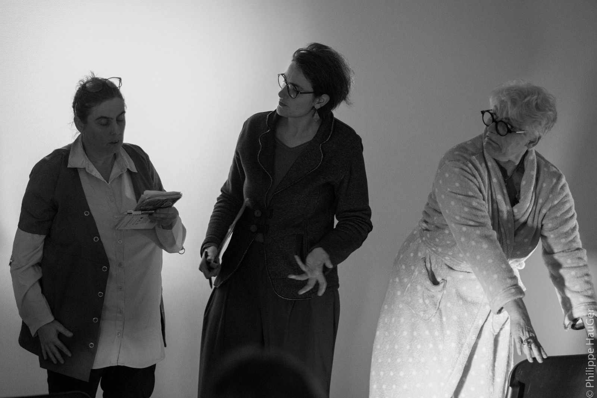
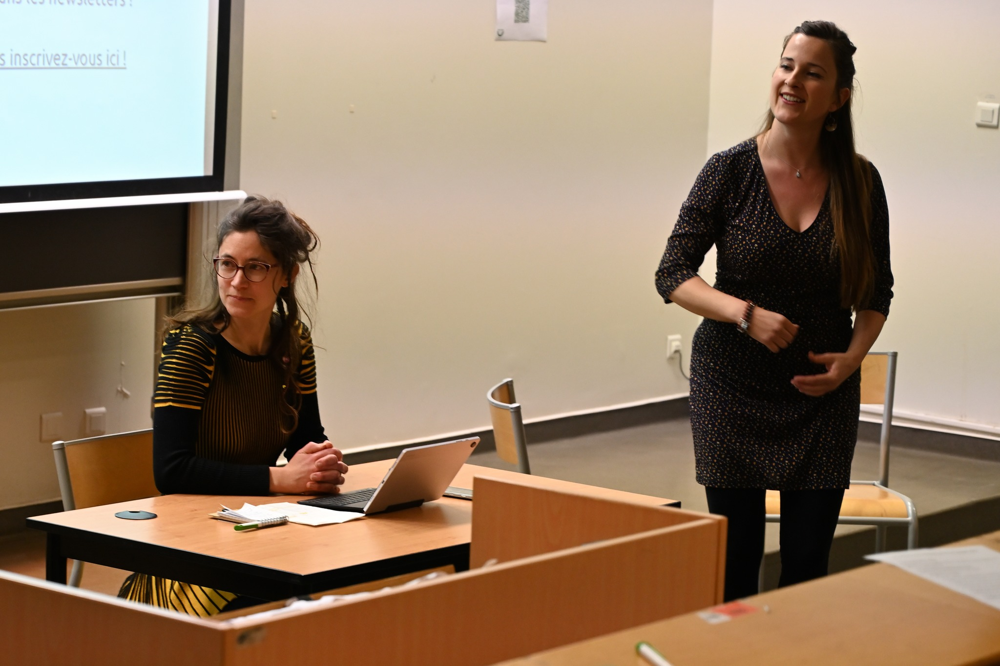
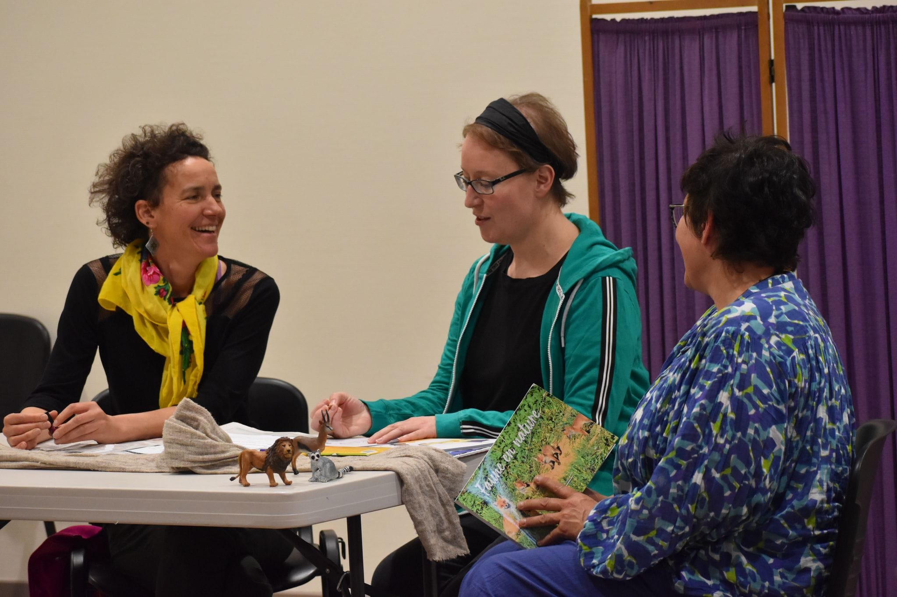
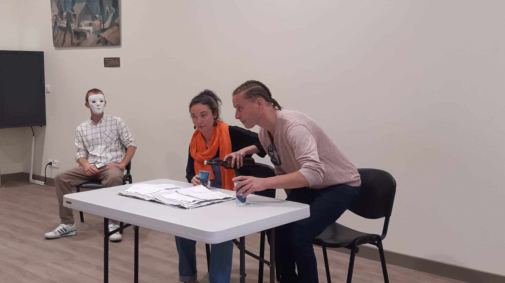
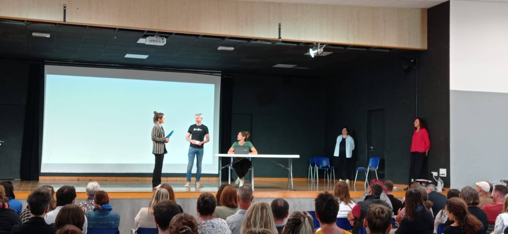
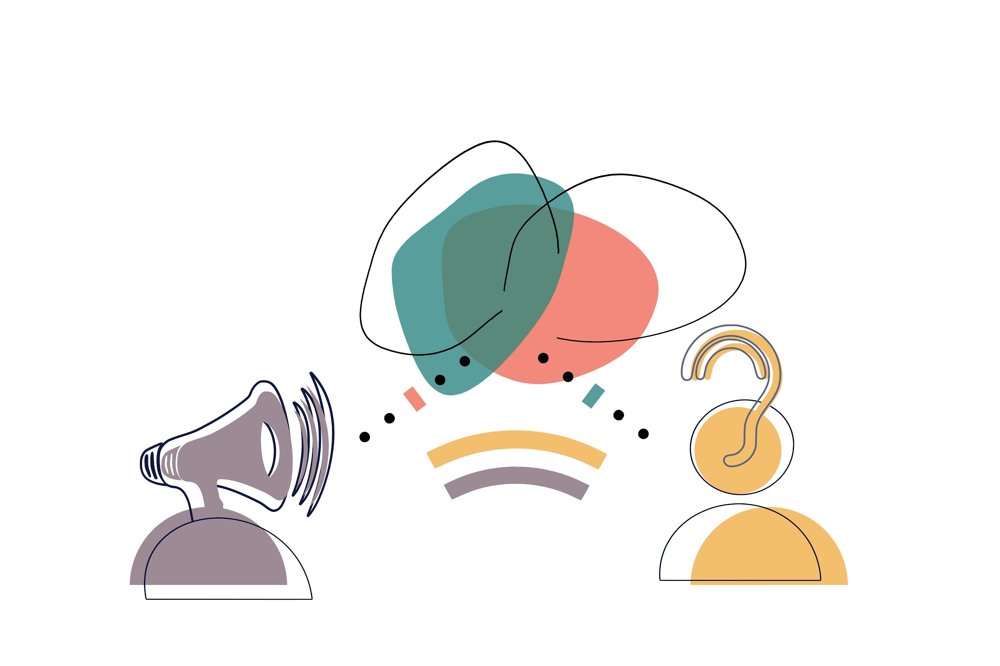
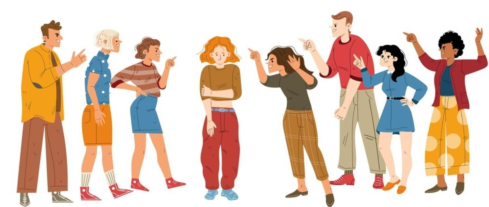
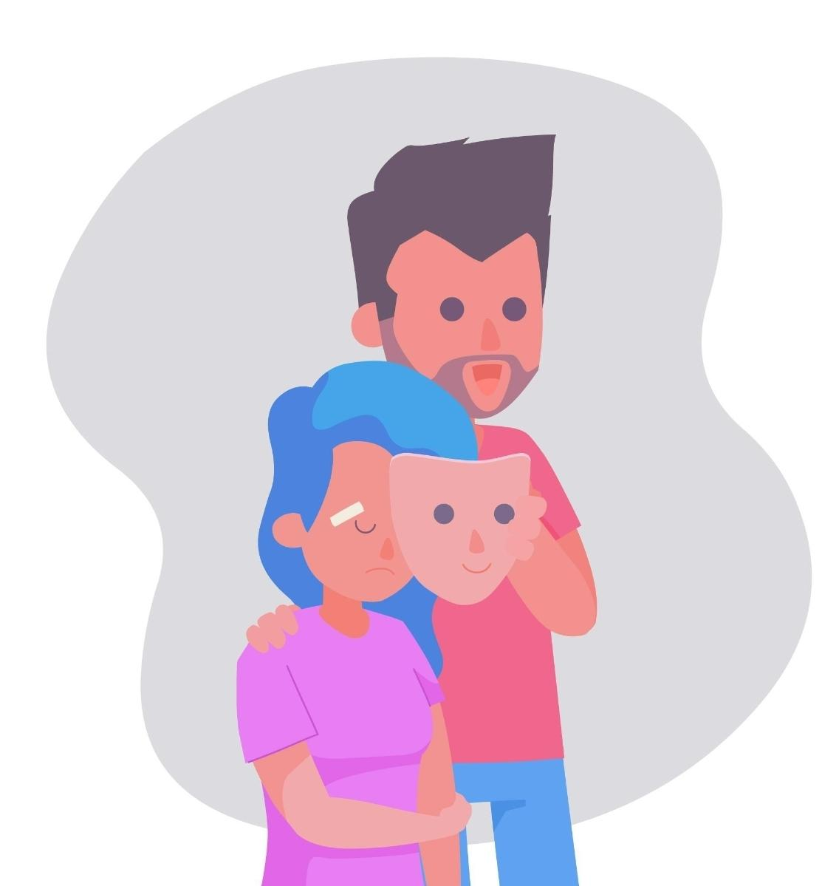
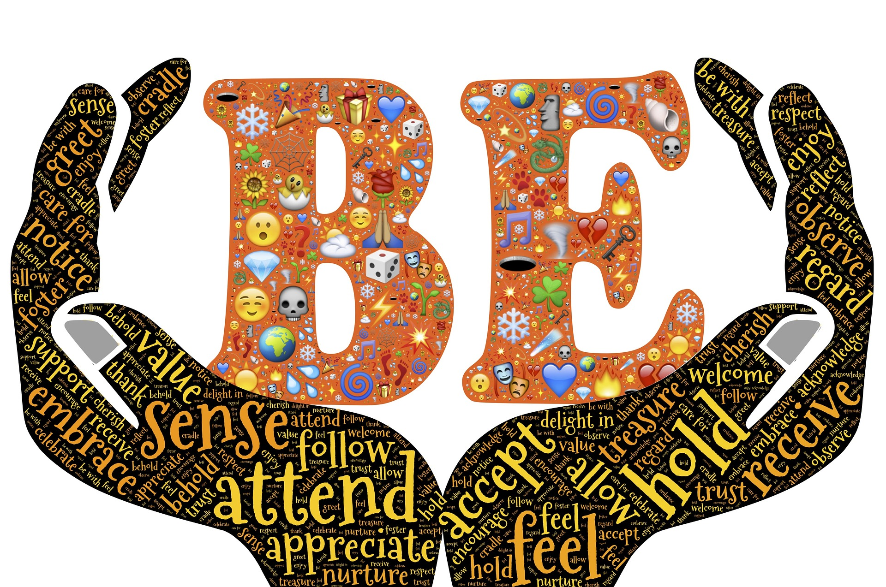

MAR en action






Vous souhaitez faire réagir sur des sujets d'actualité ? Aborder une thématique spécifique avec vos équipes ? Animer un séminaire de façon originale ?
Depuis sa création en 2023, l'Association MAR a créé une vingtaine de spectacles inspirés d'histoires réelles, d'oppressions vécues et d'anecdotes partagées par différents publics.

Un spectacle rien que pour vous
Construit à partir de vos situations et besoins spécifiques.
Nous contacter18 créations prêtes à jouer
Inspirées d'histoires réelles, adaptées à tous les publics.
Voir le répertoire18 spectacles créés depuis 2023
Les non-dits et tabous

Communication dans le monde du travail

Le poids des relations et lignées familiales

Souffrances vécues au sein de la relation conjugale
Les dynamiques de groupe en équipe
L'affirmation de soi dans différents contextes
Santé mentale des étudiant·es
Conflits d'opinions
Quand les autres dictent nos choix
Handicap & développement du pouvoir d'agir
Situations concrètes de médiation sociale
Les violences à l'égard des femmes
Notre rapport à l'écologie et à la cause animale
Lutte contre le harcèlement, retrouver le pouvoir d'agir
Les modèles éducatifs
Le burn out professionnel

L'acceptation de modes de vie différents
Vous ne trouvez pas votre thématique ?
Créer un spectacle sur mesure



Contactez-nous pour construire ensemble un spectacle adapté à vos besoins.
Nous contacter